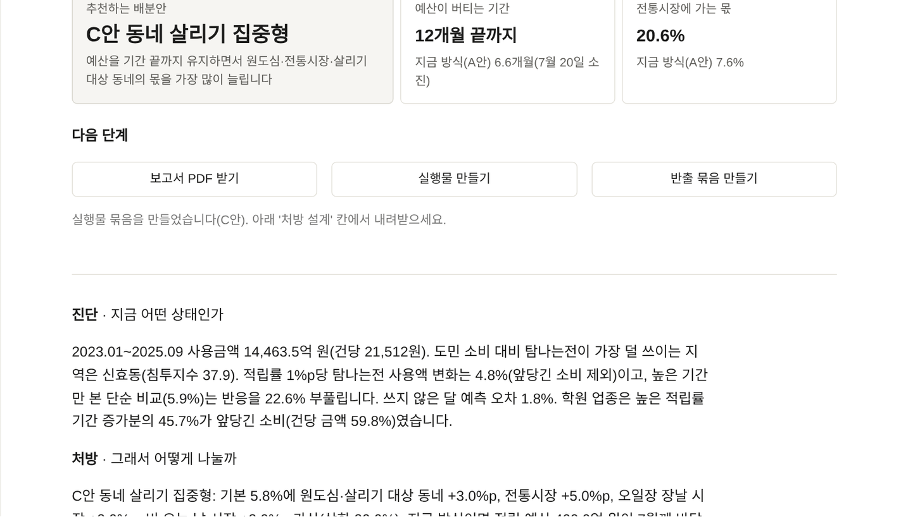
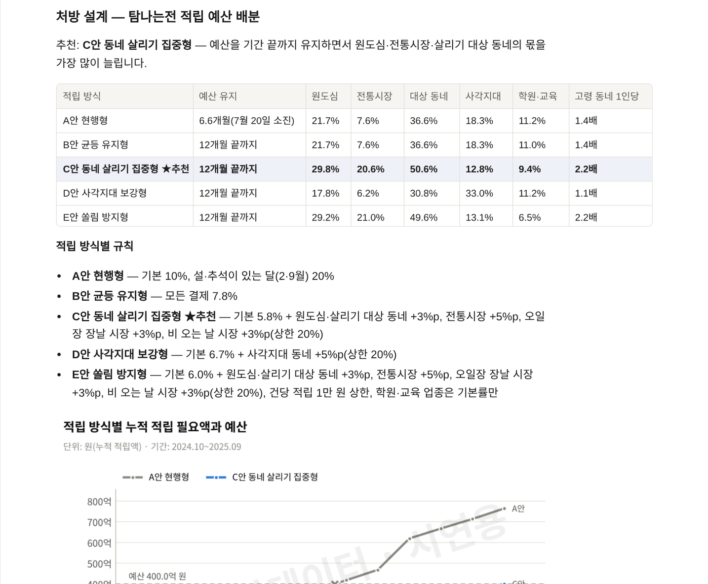
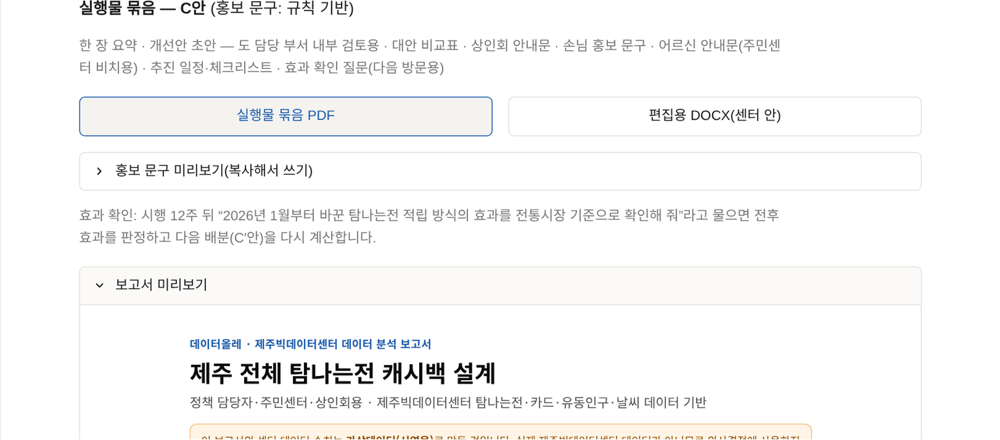
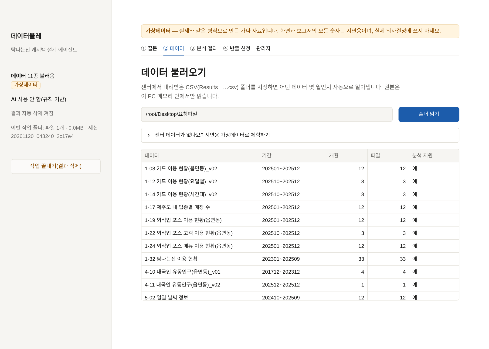
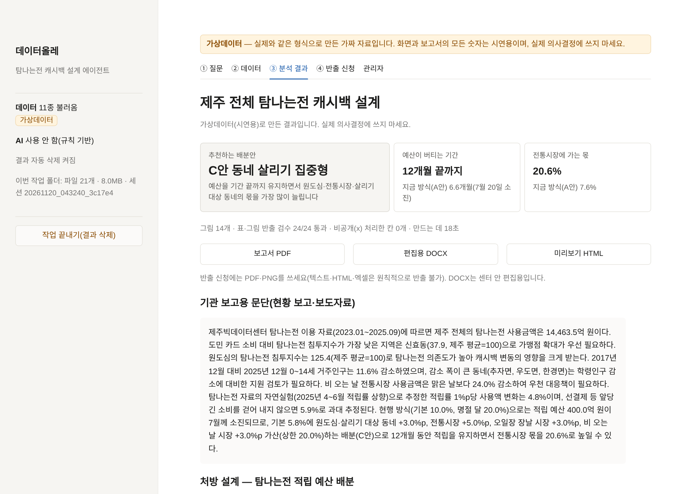
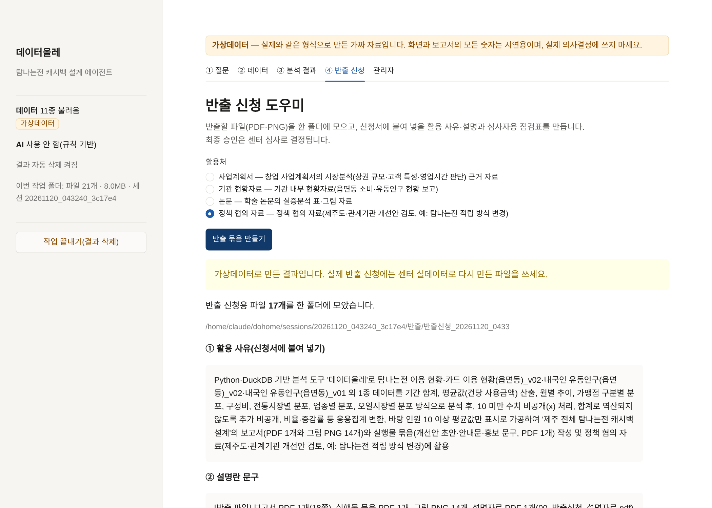
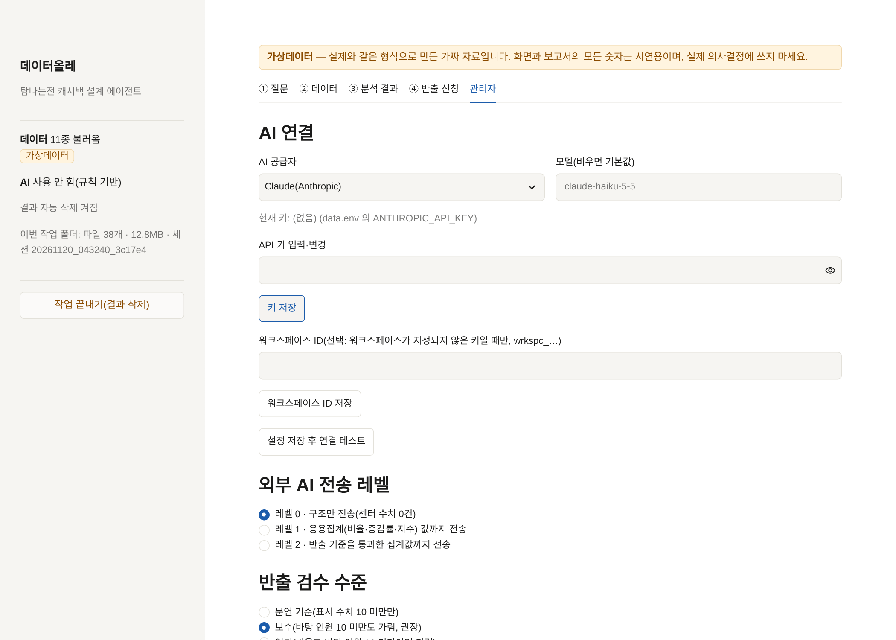
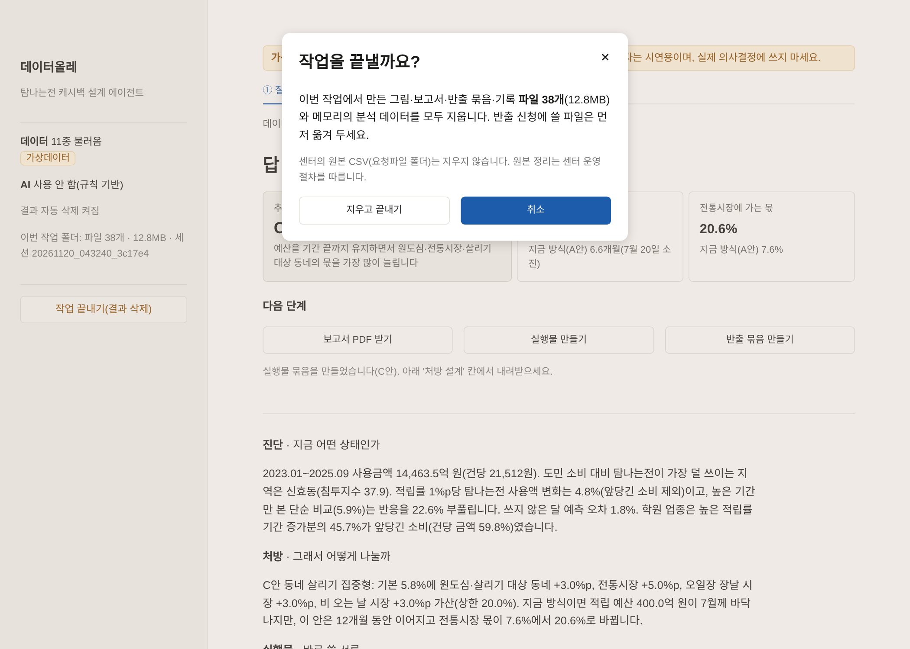

| 탭 | 하는 일 | 결과 |
|---|---|---|
| ① 질문 | 궁금한 것을 한 줄로 쓰고 에이전트에게 맡기기(또는 '직접 설정해서 분석'). | 4단계 답(진단·처방·실행물·효과 확인), 적립 배분안 A~E 표·그림, 실행물 묶음 내려받기, 작업 기록, 운영자 요청 문안 |
| ② 데이터 | 센터에서 내려받은 CSV 폴더를 읽습니다(가상데이터로 체험 가능). | 데이터 종류·기간 자동 인식, 경고 |
| ③ 분석 결과 | 보고서를 보고 내려받고, 다른 배분안으로 실행물을 다시 만듭니다. | 보고서 PDF·편집용 DOCX, 실행물 묶음, 보고 문단, 근거 보기 |
| ④ 반출 신청 | 반출할 파일을 모으고 신청 서류를 만듭니다. | 보고서·실행물 묶음 PDF·그림, 활용 사유·설명란 문구, 점검표, 설명자료 PDF |
| 관리자 | 센터 담당자용 설정(PIN 필요). | AI 연결, 전송 레벨, 검수 수준, 결과 자동 삭제, 전송 기록 |
평소 말투로 쓰고 에이전트에게 맡기기를 누르면, 에이전트가 불러온 데이터를 확인하고 알맞은 분석 코스를 실행합니다. 탐나는전 질문이면 문제 확인에서 멈추지 않고 진단(어떤 동네인지) → 처방(같은 적립 예산을 어떻게 나눌지) → 실행물(바로 쓰는 문서 묶음) → 효과 확인(시행 뒤 넣을 질문) 순서로 답합니다. 진행 과정은 화면에 한 줄씩 나타나고, 끝나면 '에이전트가 한 일'에서 다시 볼 수 있습니다.
| 이렇게 물으면 | 에이전트가 고르는 분석 |
|---|---|
| "일도1동, 탐나는전으로 동네를 살릴 수 있을까요?" "아라동 동네 진단해 줘" | 탐나는전 캐시백 설계 — 동네 진단 카드: 이 동네·같은 유형·제주 전체 비교, 진단, 원도심·인구·학령인구·침투지수·날씨, 처방 설계와 실행물 묶음 |
| "예산 400억 원으로 탐나는전 적립을 1년 내내 이어 가려면?" "3월부터 연말까지 사각지대 중심으로" | 처방 설계: 질문 속 예산·기간·시작 월·우선순위로 적립 방식 A~D를 계산(예산 숫자는 이 PC가 읽고 AI로는 보내지 않음) |
| "2025년 2분기 15% 적립 때 늘어난 사용액 중 학원 선결제 같은 앞당긴 소비는 얼마나 돼요?" "적립 혜택이 학원이나 고액 결제에 쏠리지 않게 나누려면?" | 효과 추정 + 처방 설계(우선순위: 쏠림 방지): 적립률 반응도(순수·단순 비교)·백테스트·업종별 앞당긴 소비 → E안 추천 |
| "아이가 줄고 어르신이 늘어나는 동네는 어디예요?" "원도심 상권과 고령화를 보여 주세요" | 탐나는전 캐시백 설계(제주 전체): 원도심·신도심 상권, 동네 지도, 학령인구 감소 경보, 동네 유형별 처방 |
| "2025년 6월부터 한 전통시장 추가 적립 효과를 확인하고 다음 배분을 짜 줘" | 위 코스 + 정책 전후 효과(전통시장 vs 일반 가맹점, 주간 이중차분·위약 검정) → 결과를 반영한 다음 배분(C′안) |
| "2025년 7월 이후 한림읍 카페 이용이 늘었나요?" | 사건·정책 전후 효과: 사건 전 추이가 비슷한 지역과 이중차분, 공간 위약 검정, 논문용 문단 |
| "한림읍 현황자료를 만들어 주세요" | 동네 현황자료: 소비 규모·추세, 업종 구성, 이용자 구성, 요일·시간대, 유동인구 |
| "애월읍에 카페를 창업하려고 해요" | 창업 시장분석: 시장 규모·입지(특화지수)·고객·시간대·객단가·외식업 POS·유동인구, 사업계획서 문단 |
| "노형동 카페 시간대별 이용건수 비중" | 자유 질문: 표·그림·문장 한 세트 |

답 아래에 처방 설계 — 탐나는전 적립 예산 배분이 나옵니다. 같은 예산으로 다섯 가지 적립 방식을 계산한 표와 '누적 적립액과 예산' 그림입니다.
| 적립 방식 | 내용 |
|---|---|
| A 현행형 | 기본 10%, 설·추석이 있는 달 20%(2026년 방식). 예산이 모자라면 소진 시점에 적립이 멈춥니다. |
| B 균등 유지형 | 예산이 기간 끝까지 가도록 모든 결제에 같은 적립률(자동 계산). |
| C 동네 살리기 집중형 | 기본 적립률(자동 계산)에 원도심·살리기 대상 동네 +3%p, 전통시장 +5%p, 오일장 장날 시장 +3%p, 비 오는 날 시장 +3%p(상한 20%). |
| D 사각지대 보강형 | 기본 적립률(자동 계산)에 탐나는전이 덜 쓰이는 동네(침투지수 80 미만) +5%p. |
| E 쏠림 방지형 | C안에 결제 1건당 적립 1만 원 상한과 '학원·교육 업종은 기본률만'을 더해 선결제·고액 결제로 혜택이 쏠리는 것을 막습니다. 표의 '학원·교육'·'고령 동네 1인당' 칸으로 쏠림을 비교합니다. |
| C′ 효과 반영 조정안 | 정책 시작 월을 넣어 효과를 확인했을 때만 나옵니다. 효과가 확인되면 유지, 불분명하면 장날·비 오는 날로 좁힘, 역효과면 시장 가산 중단. |
표의 '원도심·전통시장·대상 동네·사각지대·(질문한 동네)' 칸은 지급된 적립액 중 그곳으로 간 몫입니다. 추천안(★)과 이유가 함께 나오며, '실행물에 쓸 배분안'을 고르고 실행물 묶음 만들기를 누르면 그 안으로 문서를 다시 만듭니다(에이전트는 추천안으로 미리 만들어 둡니다).

| 실행물 묶음(9쪽) | 쓰는 곳 |
|---|---|
| 한 장 요약 · 개선안 초안 | 도 담당 부서 내부 검토(추진 배경·현황과 문제·개선안·기대 효과·월별 적립 계획·일정·효과 확인·검토 사항) |
| 대안 비교표 | A~D안 표·그림과 안별 장단점(회의 자료) |
| 상인회 안내문 | 무엇이·왜 바뀌는지, 상인회가 할 일, 담당·연락처 빈칸(채워서 인쇄) |
| 손님 홍보 문구 | 현수막 3안, SNS 글, 문자(단문 45자·장문), 관광객 안내(국문·영문) — 글자 수 표시, 화면에서 복사 가능 |
| 어르신 안내문 | 주민센터 비치용 큰 글씨. "1만 원어치 장을 보시면 ○원을 돌려드립니다" |
| 추진 일정·체크리스트 · 효과 확인 질문 | D-60 배분안 확정 ~ D+84 효과 확인(날짜 자동 계산, 확인 칸), 다음 방문 때 붙여 넣을 질문과 미리 요청할 자료 |

에이전트가 꼭 필요한 데이터(예: 탐나는전 1-32)가 없다고 알려 주고 운영자 사전 다운로드 요청 문안을 만들어 줍니다. 문안을 복사해 운영자에게 전달하세요. 인구 추세용 유동인구 v01(4-10)은 '2017년의 같은 달 1개월'만 있으면 됩니다(예: 최근 자료가 2025년 12월이면 2017년 12월).
'직접 설정해서 분석'을 누르면 코스·동네·정책 시작 월을 직접 고를 수 있습니다. 동네는 행정동(일도1동·아라동 등) 또는 읍면동(법정동) 이름으로 고르고, 탐나는전 코스에서는 처방 설계 칸에 적립 예산(억 원, 0이면 2026년 예산 비율 적용)·이어 갈 기간·시작 월·우선순위를 넣습니다. 아래 '필요한 데이터와 다운로드 체크리스트'에서 받은 개월 수를 확인한 뒤 분석 실행을 누릅니다.
보고서의 '효과 추정' 절은 적립률을 1%p 올릴 때 탐나는전 사용액이 얼마나 느는지(반응도)를 자료에서 잽니다. 처방 설계의 소진일은 이 값을 써서 계산합니다.
| 표·그림 | 읽는 법 |
|---|---|
| 순수 반응 | 높은 적립률 기간과 바로 뒤 두 달을 함께 보고 구한 값. 미리 결제한 몫(앞당긴 소비)은 뒤에서 빠지므로 빠집니다. 이 값을 설계에 씁니다. |
| 단순 비교 | 높은 기간만 작년과 비교한 흔한 방식. 앞당긴 소비까지 반응으로 잡아 보통 더 큽니다. 차이 = 착시 크기. |
| 백테스트 | 추정에 쓰지 않은 달을 예측해 본 오차. 작을수록 믿을 만합니다(단순 비교 방식의 오차와 함께 표시). |
| 업종별 표 | '뒤 두 달 빈자리'가 크고 '건당 금액'이 오른 업종은 '앞당긴 소비 의심'(예: 학원비 몇 달치 선결제). 이런 업종은 E안(쏠림 방지)에서 가산을 빼고 건당 상한을 둡니다. |
| 그림(실제 vs 예측) | 회색이 높은 적립률 기간. 파란 선(실제)이 기간 안에서 주황 점선(순수 반응 예측)보다 높고 바로 뒤에서 낮으면 그만큼이 앞당긴 소비입니다. |
적립률이 바뀐 달과 그 작년 같은 달이 자료에 없으면 추정하지 못했다고 밝히고 반응 0으로 계산합니다. 적립률 이력은 보도 기준이며, 공식 이력이 있으면 설치 폴더 data\rates.csv(열: ym, rate, limit, source)로 바꿔 넣습니다.
요청파일 폴더에 미리 받아 둡니다.Results_…csv여도 헤더(열 이름)를 보고 데이터 종류와 월을 자동으로 알아냅니다.

| 지표 | 뜻 |
|---|---|
| 침투지수 | (탐나는전 사용액 ÷ 도민 카드 소비) ÷ 제주 전체 같은 비율 × 100. 100보다 크면 탐나는전이 도민 소비에서 차지하는 몫이 제주 평균보다 큼, 80 미만은 '사각지대' |
| 도민 소비 상대 지수 | 동네 유형의 도민 카드 소비를 제주 전체 흐름으로 나눈 값(첫 달=100). 계절 변화를 지우고 '제주 전체보다 앞서는지·뒤처지는지'만 봄 |
| 고령화율·0~14세 비중 | 새벽(02~05시) 거주인구(통신 추정)에서 65세 이상·0~14세가 차지하는 비중. 주민등록 인구와 다름 |
| 학령인구 감소 경보 | 같은 달 기준 0~14세 거주인구 변화율. 학교별 학생 수가 아닌 대리지표이므로 교육청 자료와 함께 보세요 |
| 동네 유형별 처방 | 고령·상권 위축 / 아이 감소 / 고령 동네 / 사각지대 / 관광 의존 / 성장으로 나눈 '검토 제안'. 정책 결정은 현장 의견과 함께 판단 |
| 처방 설계(예산 배분) | 기준 1년의 날짜·동네·시장별 사용액에 적립 방식을 적용해 날짜 순서로 쌓은 값. '소진 시점'은 누적 적립액이 예산을 넘는 날, '가정과 한계' 상자의 민감도(적립률 1%p당 사용액 2% 변화 가정)도 함께 보세요 |

00_반출신청_설명자료.pdf, 01_보고서_….pdf, (만들었다면) 02_실행물_….pdf, 그림 PNG …가 모입니다.
| 설정 | 설명 |
|---|---|
| AI 공급자·키 | Claude(기본, claude-haiku-5-5) · OpenAI · Gemini · Ollama(이 PC 안 로컬 모델) · AI 사용 안 함. 키는 data\.env에 저장. '연결 테스트'로 확인 |
| 외부 AI 전송 레벨 | 0(기본·권장): 구조만 전송, 센터 수치 0건 / 1: 비율·증감률 값까지 / 2: 검수를 통과한 집계값까지. 센터는 집계 결과의 외부 전송을 사전 승인하지 않으므로 0을 권장합니다. |
| 반출 검수 수준 | 문언 기준(표시 수치 10 미만만) / 보수(바탕 인원 10 미만도 가림, 기본) / 엄격(비율도 바탕 인원 10 미만이면 가림) |
| 결과 자동 삭제 | ON(기본): 작업 끝내기 때 삭제 + 다음 실행 때 지정 시간보다 오래된 세션 결과 삭제. OFF: 관리자가 세션 목록에서 직접 삭제. |
| 전송 기록 | AI 호출 횟수·토큰·외부로 보낸 센터 수치 개수, 에이전트가 부른 도구, 마지막 호출에서 실제로 보낸 내용 원문. |

네. 에이전트는 AI가 없으면 규칙 기반으로 같은 도구를 같은 순서로 부릅니다. 분석·검수·보고서·반출 서류는 모두 AI 없이 동작하고, AI는 도구 선택과 답 문장만 돕습니다.
모든 숫자는 프로그램이 데이터에서 계산한 값이며, 문장 속 숫자는 '근거 보기' 목록에서만 채워집니다. AI가 쓴 글에 근거 없는 숫자가 있으면 그 글을 쓰지 않습니다. 단, 카드 자료는 비씨카드 결제분 표본이고 거주인구는 통신 추정이므로 상대 비교로 해석하세요.
작은 지역·업종이나 한 달 자료는 10 미만 칸이 많습니다. 기간을 늘리거나(월→분기), 지역을 넓히면(법정동→권역) 줄어듭니다. 프로그램도 가려진 칸이 많으면 상위 단위로 자동으로 묶어(범주처리) 다시 집계합니다.
제주연구원(2024) 인구감소위험 분석의 구도심 동과 서귀포 원도심 상권 활성화 사업 대상 동을 바탕으로 한 근사 구분입니다(자세한 목록은 '데이터 활용 명세').
질문에 넣으면 됩니다(예: "예산 350억 원으로 3월부터 연말까지"). '직접 설정해서 분석'의 처방 설계 칸에서도 바꿀 수 있습니다. 예산을 넣지 않으면 2026년 비율(예산 425억 원 ÷ 2025년 사용액 6,800억 원 = 6.25%)을 자료 사용액에 적용합니다.
확정 전 초안입니다. 적립률은 담당 부서가 확정하고, 안내문의 담당 부서·연락처 빈칸을 채워 쓰세요. 반출은 PDF로, 문구 수정은 센터 안에서 DOCX로 합니다.
적립률을 1%p 올리면(예: 10% → 11%) 탐나는전 사용액이 약 4.8% 늘었다는 뜻입니다. 시기만 당긴 선결제는 뺀 값이며, 시연 수치는 가상데이터입니다.
고령화율이 중앙값 이상인 동네 주민 1인당 받는 적립액이 그 밖의 동네 주민보다 2.2배라는 뜻입니다. 인구는 행정안전부 주민등록 인구통계(공개 자료)를 씁니다. 1보다 작으면 혜택이 젊은 동네로 쏠린 것입니다(누가 썼는지는 자료에 없어 동네 단위로 봅니다).
아니요. 가상데이터는 형식만 같은 시연용 가짜 데이터입니다. 반출 신청에는 센터 실데이터로 다시 만든 파일을 쓰세요(반출 도우미가 경고합니다).